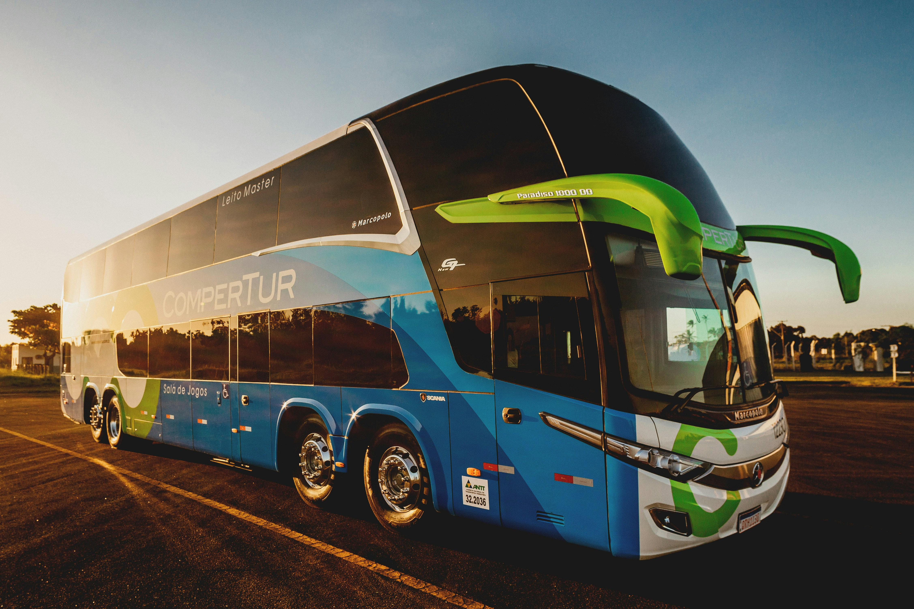
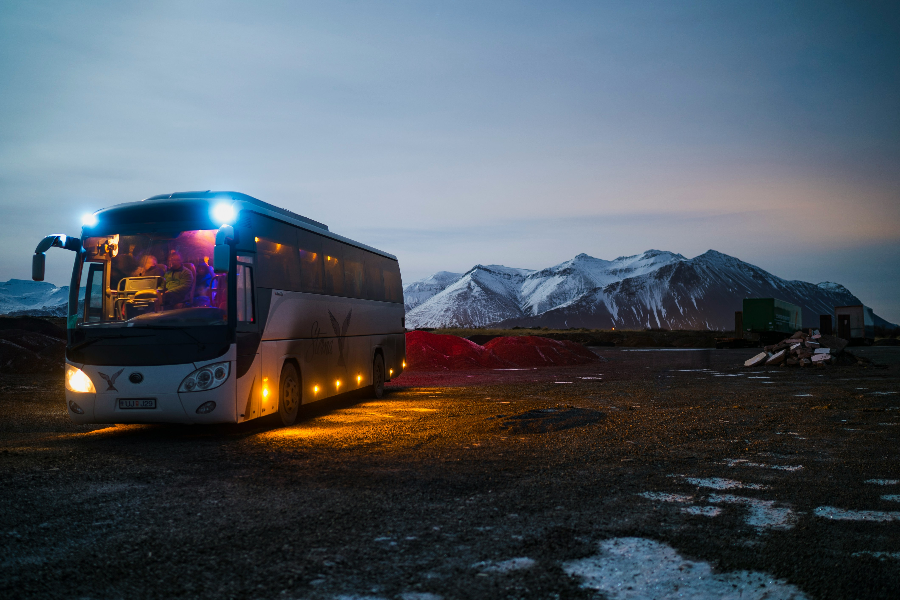

Transporte Ejecutivo de Calidad
Viaje con comodidad y seguridad a su lugar de trabajo

Flotilla Moderna y Confortable
Autobuses equipados con la ultima tecnologia

Servicio Personalizado
Rutas disenadas para su comodidad
Viaje con comodidad y seguridad a su lugar de trabajo

Autobuses equipados con la ultima tecnologia

Rutas disenadas para su comodidad
Somos una empresa costarricense especializada en transporte ejecutivo para empresas. Ofrecemos soluciones de movilidad confiables y comodas para que sus colaboradores lleguen a tiempo y descansados a su lugar de trabajo.
Conductores profesionales y unidades con los mas altos estandares de seguridad
Horarios establecidos y cumplimiento de rutas garantizado
Autobuses de lujo con aire acondicionado, WiFi y asientos reclinables
"Excelente servicio. Desde que contratamos 2Work Transport, la puntualidad de nuestros empleados mejoro significativamente."
- Maria Rodriguez, Gerente de RR.HH."Los autobuses son muy comodos y los conductores son profesionales. Recomiendo totalmente este servicio."
- Carlos Mendez, Usuario"Una solucion perfecta para empresas que valoran el bienestar de sus colaboradores."
- Ana Solano, Directora Administrativa